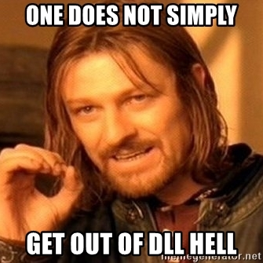
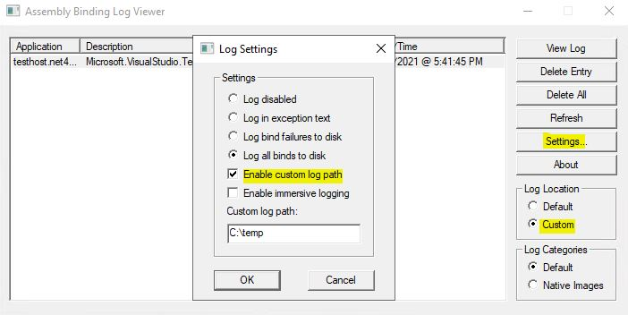
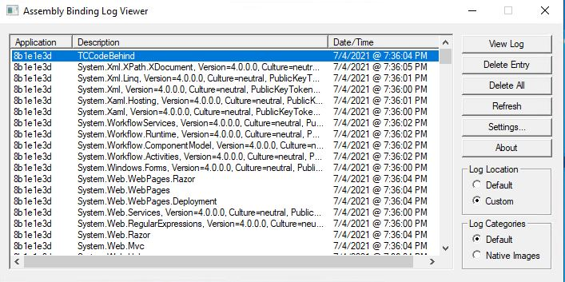
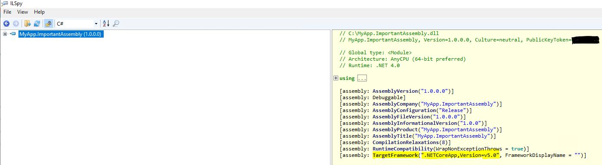

Could Not Load File or Assembly...Oh My! How I Went Through Five Stages of Grief and Mastered Assembly Version Conflict Debugging With .NET CLI, ILSpy and Fusion Log
If you're a .NET developer, I bet that at least once you've experienced errors like "System.IO.FileLoadException: Could not load file or assembly '[ASSEMBLYNAME], Version=x.x.x.x, Culture=neutral, PublicKeyToken=xxxxxx' or one of its dependencies. The located assembly's manifest definition does not match the assembly reference. (Exception from HRESULT: 0x80131040)"
If you did, welcome to the club! I've been dealing with issues like this for several years now and there are some tools out there that could make this process less painful. Trust me, sometimes it may get pretty painful…

Why is dll hell created in the first place?
Well, dll hell is directly related to assemblies that are signed with strong name. When an assembly is signed with a strong name, a unique identity for the specific assembly with a specific version is created. Assembly's identity consists of it's name, version, culture information, public key and a digital signature. In order to sign an assembly with strong name you need to use a so called Strong Name Key, that is a cryptographic key pair, consisting of:
- a public key, that is distributed together with strong-named assembly, and
- a private key that is used to sign the hash of the assembly file.
This creates a version binding so that once you refer to an assembly with the same name, but totally different version or public key than what the application expects, a "Could not load file or assembly" error will be thrown. When strong name is in the game, each new version of the assembly means a totally new identity.
When strong-named assembly is loaded during application's runtime, Global Assembly Cache (GAC) will be checked first. If an assembly with the needed identity is not there, application base will be probed. If an assembly that matches the name is found but it's identity is not 100% equal to what's expected by the application, loading will fail with an exception.
This functionality was meant to prevent assembly conflicts but the irony is that you could have still ended up having quite many version binding conflicts, especially if you're not using GAC (GAC can store multiple versions of the same assembly). There are several other reasons for why you would need to sign an assembly with strong name but those are only applicable for .NET Framework and not for .NET Core. I will discuss this a bit more in the last section of this article.
One of the applications I've been working with uses strong-named assemblies and through the years I have experienced assembly version conflicts happening in following scenarios:
- Projects are targeting multiple frameworks and an assembly with the wrong target framework has been deployed.
- Projects are using central package versioning or are deploying all assemblies to the same binary folder, resulting in an assembly being overwritten due to different projects referencing different versions of the same assembly. In this case GAC is not being used.
- Application uses a third-party dependency and authors have made changes that resulted in different public/private key pair that doesn't correspond with the one application expects.
Now, let's take a look at what tools may help debugging these issues and identifying the root cause.
Tools that helped me survive The Hell of DLL
Fusion Log
Aka Assembly Binding Log Viewer, aka Fuslogvw.exe - extremely useful tool that has made my developer life easier many times. It logs details of all the assembly binds generated by the application. With help of Fusion Log you can explore all the assembly bindings that have been successfully or unsuccessfully loaded by the application. Fusion Log is automatically installed together with Visual Studio but when you experience assembly load failures in production environment and you don't want to install Visual Studio on production servers, you can get the tool up and running by copying FUSLOGVW.exe and flogvwrc.dll from one of the Microsoft SDKs locations (for example, "C:\Program Files (x86)\Microsoft SDKs\Windows\v10.0A\bin\NETFX 4.8 Tools").
You can read more about Fusion Log, where to download it and how it can be configured in Microsoft documentation: Fuslogvw.exe (Assembly Binding Log Viewer).
Let's now see Fusion Log in action. I have an application that is targeting both .NET Framework 4.8 and .NET 5. As of now, .NET Framework 4.8 is deployed to production since migration to .NET 5 is not fully completed. Something went wrong in one of the projects and the target for .NET Framework 4.8 was removed. Because of this only the .NET 5 version of the assembly was compiled, which was then included in the application setup package for .NET Framework 4.8. This will, of course, cause a runtime error since applicatoin is not expecting to use .NET 5 assemblies just yet. Now, let's borrow the neuralizer from Men in Black and see how we can identify the root cause when we don't know what actually was the reason for the error.
Initially, logs show us following error message indicating failure during application start-up:
error : System.IO.FileNotFoundException: Could not load file or assembly 'System.Runtime, Version=5.0.0.0, Culture=neutral,
PublicKeyToken=b03f5f7f11d50a3a' or one of its dependencies. The system cannot find the file specified. Let's start Fusion Log and get it ready for logging assembly bindings. I've configured a custom log path and logging of all bindings, both successful ones and those that failed. Normal assembly binding requests are being logged by default (marked "Default" in Log categories) but it's also possible to log assembly binds for native images that were created using the Ngen.exe (Native Image Generator) - for that, you need to change Log category to "Native Images". You can read more about Native Image Generator here: Ngen.exe.

Allright, we're ready to attempt to start our application again in order to get asssembly bindings logged. Once start-up of the application has been triggered, we can see that a lot of bindings are being logged:

It may be hard and time-consuming to go through all the bindings directly in the Fusion Log UI, especially if the application is pretty big, so I normally go to the custom log path I've configured and search for the file name that equals the assembly name that causes the error - in our case I will do a search for "System.Runtime, Version=5.0.0.0". Once the HTML file is located, we can open it and get more information about:
- the application that initiated the bind,
- details about the bind itself, like what assembly called this specific bind,
- the reason for failure or information about that the binding was successful,
- whether assembly was found in GAC,
- if assembly was not found in GAC, a list of other probing URLs where current assembly may reside.

As you can see in the screenshot above, a lookup in GAC was made first and after it was unsuccessful, application base locations have been checked. When no relevant assembly was found, the binding was logged as failed. Also, we can see from the log that the calling assembly, i.e. the one that triggers loading of System.Runtime with version 5.0.0.0, is MyApp.ImportantAssembly - it probably means that this assembly is the one causing the error in the first place!
Thanks to Fusion Log we've been able to narrow it down to a potential mischief-maker - let's now use ILSpy in order to inspect MyApp.ImportantAssembly for discrepancies.
ILSpy
Another great open-source tool that lets you browse and decompile .NET assemblies. It can come in very handy when you, for example, need to confirm a theory about an assembly with a wrong target framework being deployed as part of your application. I have used it multiple times when I was working on migration from .NET Framework to .NET Core and also when lifting projects to new C# project format - ILSpy makes it really easy to see the contents of an assembly and verify that the assembly's identity has been generated correctly, as well as confirm that all the necessary code and dependencies have been properly included.
ILSpy can be downloaded from Microsoft Store or from GitHub.
Building upon example above, we have identified that System.Runtime assembly with version 5.0.0.0 is attempted to be loaded by MyApp.ImportantAssembly.dll. Let's use ILSpy and inspect the contents of this assembly:

Oh my! As you can see in the screenshot above, the project that the assembly was generated from is indeed targeting .NET 5 and not .NET Framework 4.8, which will result in failure since the application is still being deployed on .NET Framework 4.8 in production. Now we have identified the root cause and can reach out to responsible development team in order to fix this and add an additional target framework to this specific project.
Great job! ;)
dotnet list package –include-transitive
Lastly, .NET CLI provides a very easy and straightforward way to list all NuGet package references for a specific project or a solution. This can be very relevant during debugging of assembly version conflicts. As I mentioned earlier, your projects may be using central package versioning and every project may have several dependencies which, in turn, have dependencies of their own. Those nested dependencies will become transitive dependencies for your project. That's when it becomes tricky: different packages may depend upon different versions of the same package. Due to this, one version of the package can get overwritten by another version of the package during build, and will cause an assembly load failure during deployment, since one of the versions that application expects, is missing.
That's when, just with one command, I can get an overview of all the dependencies used in my solution, including transitive dependencies, so that I can identify what components in my solution are dependent upon different versions of the same package.
Important note: you need to build the solution or project that you want to inspect prior to running this command!
More information about dotnet list package command can be found in Microsoft's official documentation: dotnet list package.
As an example, let's say we get following assembly load error:
System.IO.FileLoadException: Could not load file or assembly 'System.Security.Cryptography.Xml, Version=4.0.3.0,
Culture=neutral, PublicKeyToken=cc7b13ffcd2ddd51' or one of its dependencies. The located assembly's manifest definition
does not match the assembly reference. (Exception from HRESULT: 0x80131040)In order to find out what packages are referencing this dependency, let's execute following command and inspect dependencies included in the applicaiton's source code:
dotnet list MyTestSolution.sln package --include-transitive -framework net5.0
If you have many dependencies it's better to write the output to a separate file which you can easily analyze:
dotnet list MyTestSolution.sln package --include-transitive -framework net5.0 > mytestsln-dependencies.txt
After analyzing the output we could identify following two projects dependent upon different versions of System.Security.Cryptography.Xml:
Project 'TestProject-A' has the following package references
[net5.0]:
Top-level Package Requested Resolved
> SoapCore 1.0.0 1.0.0
> System.Configuration.ConfigurationManager 4.7.0 4.7.0
Transitive Package Resolved
> System.Security.Cryptography.ProtectedData 4.7.0
> System.Security.Cryptography.X509Certificates 4.3.0
> System.Security.Cryptography.Xml 4.5.0
# The rest of the dependencies is omitted...
Project 'TestProject-B' has the following package references
[net5.0]:
Top-level Package Requested Resolved
> Newtonsoft.Json 11.0.2 11.0.2
> External.Client.Core 7.0.3 7.0.3
> External.Client.Portal 7.0.3 7.0.3
> System.Data.DataSetExtensions 4.5.0 4.5.0
> System.Security.Permissions 5.0.0 5.0.0
Transitive Package Resolved
> System.Security.Cryptography.ProtectedData 4.7.0
> System.Security.Cryptography.X509Certificates 4.3.0
> System.Security.Cryptography.Xml 4.7.0
# The rest of the dependencies is omitted...As we can see, both TestProject-A and TestProject-B have System.Security.Cryptography.Xml as a transitive dependency, but projects are dependent upon different versions of the dependency. With help of .NET CLI we have been able to identify which projects are using different version of the same assembly - now we can analyze both projects and decide how this version conflict can be resolved in the best possible way.
I will briefly mention some of the options for resolving situations like this in the section below.
How to resolve assembly version conflicts
There are several ways assembly version conflicts can be resolved:
-
Ensure that NuGet packages used in your application are being maintained and continuously updated. I would recommend using a specific package version instead of wildcard - mainly, due to security risk and potential breaking changes that may suddenly be introduced in the newest version of the package. I would also recommend to update package versions once in a while so that your application always uses one of the most recent stable versions. Doing this will minimize issues when some dependencies have an older, potentially outdated, transitive dependency, and some are using the newest variant.
-
Sometimes you need to use specific versions for some dependencies and can't enforce point #1 - an alternative solution would then be to add an assembly binding redirect to the application's configuration file (for example, App.config). This will redirect all components of your application that attempt to load an older version of a specific assembly to use another, typically newer, version of the same assembly. An example of such binding redirect:
<dependentAssembly>
<assemblyIdentity name="System.Net.Http.Formatting" publicKeyToken="31bf3856ad364e35" culture="neutral" />
<bindingRedirect oldVersion="0.0.0.0-5.2.7.0" newVersion="5.2.7.0" />
</dependentAssembly>Here, all versions up to 5.2.7.0 of System.Net.Http.Formatting assembly will be redirected to use version 5.2.7.0. You can read more about redirecting assembly versions here: Redirecting assembly versions.
- There are situations where you may need to use the same assembly but with different identities, and you are not using Global Assembly Cache. I've experienced a scenario where we had two third-party dependencies in our application that were using different versions of the same package that was strong-name signed. In the newer version of the package authors have changed public/private key pair that was used for signing the assembly with strong name, which caused a totally different assembly identity than what the application expected. We had to keep both versions of this package due to the direct application dependencies - and that's when assembly redirect based on codebase came in handy. What differs it from point #2 is that, instead of defining a binding redirect, you create a separate folder in your appbase where you will store one of the versions of the conflicting assembly. In this way you will tell the application where to look for a specific version of the assembly. An example of such assembly codebase redirect:
<dependentAssembly>
<assemblyIdentity name="System.Net.Http.Formatting" publicKeyToken="31bf3856ad364e35" culture="neutral" />
<codeBase version="5.6.0.0" href="bin/System.Net.Http.Formatting_5.6.0.0/System.Net.Http.Formatting.dll"/>
</dependentAssembly>
<dependentAssembly>
<assemblyIdentity name="System.Net.Http.Formatting" publicKeyToken="1234567891011121" culture="neutral" />
<codeBase version="5.7.0.0" href="bin/System.Net.Http.Formatting_5.7.0.0/System.Net.Http.Formatting.dll"/>
</dependentAssembly>Take a look at official documentation for more information: Specifying and assembly's location.
- When it comes to storing multiple versions of the same assembly, you can use Global Assembly Cache (GAC) but that's not my preferred solution, that's why I will not directly recommend it - unless it's an absolute requirement for your application. Wherever it's possible to run the application without the dependency on GAC, I would suggest doing so. The reason for this being that GAC makes it harder to maintain application's assemblies and dependencies. Installing and uninstalling a specific assembly also gets more complicated, compared to assemblies that are only located in the appbase folder. It is also strongly tied to Windows OS, and if you decide to migrate your application to .NET Core and make your product cross-platform, you will anyway need to handle deployment of your assemblies outside of GAC.
To sign or not to sign - the future of strong-named assemblies
Initially, when we had only .NET Framework to build our applications on, there were multiple reasons for why you would sign assemblies with strong name. And no, none of those reasons were related to security! Unfortunately this functionality is often misinterpreted, but the fact is that signing assemblies with strong name will not increase security in your application - it will only provide a unique identity for a specific assembly! This functionality is typically useful for .NET Framework applications where you may need to have a domain neutral assembly due to performance reasons, or when you want your assemblies to be referenced by other strong-named assemblies. There are also other use cases where using strong-named assemblies is relevant, you can read more in official documentation: Why strong-name your assemblies?.
With the advent of .NET Core and the need for cross-platform support in many applications, strong-named assemblies do not provide any material value anymore. If you are using third-party dependencies in your application, there is a high chance of those dependencies not using strong-named assemblies either. Unless package authors provide a strong-name signed variant of the package you may face a challenge of loading those dependencies in your application. If you remember, strong-named assemblies can call only other strong-named assemblies - any attempts to load unsigned assemblies will fail with "Missing strong name" error.
You can read more about strong name signing in .NET Core on GitHub.
And in case you're wondering if unsigned assemblies will be able to call strong name signed assemblies, the answer is: 'Yes, they can!'.
Unsigned assemblies can load strong-name signed assemblies but not the other way around, so even if you decide to remove strong name signing in your application you'll still be able to use third-party dependencies that are signing their assemblies with strong name.
In conclusion I would say that as long as your application targets .NET Core or you're in process of migrating your application to .NET Core, you should not use strong name signing for your assemblies. Unless you need to, of course.
Congratulations on mastering the art of assembly version conflict resolutions! Hopefully, you will not face these issues yourself but if you do, you should now have all the necessary tools to resolve them and become a dev hero! ;-)
That's it from me this time, thanks for checking in! If this article was helpful, I'd love to hear about it! You can reach out to me on LinkedIn, GitHub or by using the contact form on this page :)
Stay secure, stay safe.
Till we connect again!